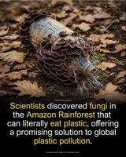

0



Wikipedia describes Freenet as "a peer-to-peer platform for censorship-resistant, anonymous communication," released in the year 2000. "Both Freenet and some of its associated tools were originally designed by Ian Clarke," Wikipedia adds. (And in 2000 Clarke answered questions from Slashdot's readers...)
And now Ian Clarke (aka Sanity — Slashdot reader #1,431) returns to share this announcement:
Freenet's new generation peer-to-peer network is now operational, along with the first application built on the network: a decentralized group chat system called River.
The new version is a complete redesign of the original project, focusing on real-time decentralized applications rather than static content distribution. Applications run as WebAssembly-based contracts across a small-world peer network, allowing software to operate directly on the network without centralized infrastructure.
An introductory video demonstrating the system is available on YouTube.
"While the original Freenet was like a decentralized hard drive, the new Freenet is like a full decentralized computer," Clarke wrote in 2023, "allowing the creation of entirely decentralized services like messaging, group chat, search, social networking, among others... designed for efficiency, flexibility, and transparency to the end user."
"Freenet 2023 can be used seamlessly through your web browser, providing an experience that feels just like using the traditional web,"
Read more of this story at Slashdot.
Long-time tech journalist Clive Thompson interviewed over 70 software developers at Google, Amazon, Microsoft and start-ups for a new article on AI-assisted programming. It's title?
"Coding After Coders: The End of Computer Programming as We Know It."
Published in the prestigious New York Times Magazine, the article even cites long-time programming guru Kent Beck saying LLMs got him going again and he's now finishing more projects than ever, calling AI's unpredictability "addictive, in a slot-machine way."
In fact, the article concludes "many Silicon Valley programmers are now barely programming. Instead, what they're doing is deeply, deeply weird..."
Brennan-Burke chimed in: "You remember seeing the research that showed the more rude you were to models, the better they performed?" They chuckled. Computer programming has been through many changes in its 80-year history. But this may be the strangest one yet: It is now becoming a conversation, a back-and-forth talk fest between software developers and their bots...
For decades, being a software developer meant mastering coding languages, but now a language technology itself is upending the very nature of the job... A coder is now more like an architect than a construction worker... Several programmers told me they felt a bit like Steve Jobs, who famously had his staffers churn out prototypes so he could handle lots of them and settle on what felt right. The work of a developer is now more judging than creating...
If you want to put a number on how much more productive A.I. is making the programmers at mature tech firms like Google, it's 10 percent, Sundar Pichai, Google's chief executive, has said. That's the bump that Google has seen in "engineering velocity" — how much faster its more than 100,000 software developers are able to work. And that 10 percent is the average inside the company, Ryan Salva, a senior director of product at the company, told me. Some work, like writing a simple test, is now tens of times faster. Major changes are slower. At the start-ups whose founders I spoke to, closer to 100 percent of their code is being written by A.I., but at Google it is not quite 50 percent.
The article cites a senior principal engineer at Amazon who says "Things I've always wanted to do now only take a six-minute conversation and a 'Go do that." Another programmer described their army of Claude agents as "an alien intelligence that we're learning to work with." Although "A.I. being A.I., things occasionally go haywire," the article acknowledges — and after relying on AI, "Some new developers told me they can feel their skills weakening."
Still, "I was surprised by how many software developers told me they were happy to no longer write code by hand. Most said they still feel the jolt of success, even with A.I. writing the lines... "
A few programmers did say that they lamented the demise of hand-crafting their work. "I believe that it can be fun and fulfilling and engaging, and having the computer do it for you strips you of that," one Apple engineer told me. (He asked to remain unnamed so he wouldn't get in trouble for criticizing Apple's embrace of A.I.) He went on: "I didn't do it to make a lot of money and to excel in the career ladder. I did it because it's my passion. I don't want to outsource that passion"... But only a few people at Apple openly share his dimmer views, he said.
The coders who still actively avoid A.I. may be in the minority, but their opposition is intense. Some dislike how much energy it takes to train and deploy the models, and others object to how they were trained by tech firms pillaging copyrighted works. There is suspicion that the sheer speed of A.I.'s output means firms will wind up with mountains of flabbily written code that won't perform well. The tech bosses might use agents as a cudgel: Don't get uppity at work — we could replace you with a bot. And critics think it is a terrible idea for developers to become reliant on A.I. produced by a small coterie of tech giants.
Thomas Ptacek, a Chicago-based developer and a co-founder of the tech firm Fly.io... thinks the refuseniks are deluding themselves when they claim that A.I. doesn't work well and that it can't work well... The holdouts are in the minority, and "you can watch the five stages of grief playing out."
"How things will shake out for professional coders themselves isn't yet clear," the article concludes. "But their mix of exhilaration and anxiety may be a preview for workers in other fields... Abstraction may be coming for us all."
Read more of this story at Slashdot.
It's America's first large-scale offshore wind project, reports WBUR — enough clean energy to power 400,000 homes in Massachusetts from 62 offshore wind turbines generating 800 megawatts.
But it took a while... The plant's first construction delay happened back in 2019, they point out — and then "Just three months ago, when the project was 95% complete, the U.S. Interior Department issued a stop-work order." But after successfully challenging that order in court, and "with a stretch of good weather offshore, the developers behind the $4.5 billion project managed to get over the finish line."
The Associated Press notes it was "one of five major East Coast offshore wind projects the Trump administration halted construction on days before Christmas, citing national security concerns."
Developers and states sued, and federal judges allowed all five to resume construction, essentially concluding that the government did not show that the national security risk was so imminent that construction must halt. Another one of the five, Revolution Wind, began sending power for the first time to New England's electric grid on Friday and will scale up in the weeks ahead until it is fully operational.
"That project is nearly complete as well," notes WBUR, "and will eventually be capable of powering up to 350,000 homes."
Read more of this story at Slashdot.
"A few developers found a way, for now, to turn a few of these increasingly mediocre Amazon Show devices into friendly, useful, open computers," writes the co-founder of the gaming/tech news site Aftermath. For under $50 each, he bought some used versions of the devices and tested their instructions, partly to escape the full-screen ads Amazon began showing late last year, and also to overwrite Amazon's locked down Android fork "Fire OS" (and "a similarly neutered version of Linux called Vega OS")
Customers who bought these devices and used them for several years were not used to them showing full screen ads, and now they do. People were justifiably pissed. So what do you do when an already evil device gets shittier...? I wiped Fire OS from the device and used ADB sideload to directly load two packages on the device: LineageOS and MindTheGapps. MindTheGapps lets you turn the device into something resembling a traditional Android device, for both good and bad.... It took a few times of wiping the device, but after a few tries it finally worked as intended... I immediately installed the Home Assistant app...
Not only can the hacked Echo Show 8 control my entire smart home, it now plays back my entire local music library as well as any internet radio channels like The Lot Radio and NTS. It can also synchronize with any additional Echo Show running LineageOS in my house using the SendSpin protocol... I would gladly take it any day of the week over most of the devices these companies offer, especially Amazon. It may not be as intuitive as out-of-the-box smart home products, but I don't need my devices to be intuitive, I need them to behave. I had finally found a smart display that wasn't a cop...
The hardware is old and creaky, and after the hack it can only use 1GB of the 2GB of ram. And yet it still manages to feel snappier than the stock hardware. "The amount of telemetry, ads, and general bloat Amazon shoves down our throats definitely doesn't help performance," [XDA Devs Forum user] Rortiz2 told me. "That's actually another reason why we did LineageOS, it kind of gives the device a second life. Even though it's still a bit buggy, it feels way better to use than the stock firmware...." If you want a smart speaker with a display that just runs a stripped-down version of Android that you have full control over, you're going to have a hard time finding it outside of these three specific models unless you cobble something together yourself. It is a deceptively simple thing to desire — the kiosk computer from science fiction that isn't a narc — yet few companies really offer it.
"It should be against the law to not give an end user the ability to consensually load whatever OS or program they want on their device..." the article concludes, arguing that "If we budge on the inalienable right to modify our hardware then we forsake a key part about what makes computers special."
And in the mean time, "There are so many devices that could be put to use rotting in e-waste facilities and thrift stores..."
Read more of this story at Slashdot.
Last week System76 CEO Carl Richell criticized age-verification laws for operating systems — but he now sees a "real possibility" Colorado's law might exclude open-source.
Phoronix reports that the System76 CEO met with the state Senator who co-authored Colorado's bill, and then posted on X.com that the Senator "suggested excluding open source software from the bill."
Richell: This appears to be a real possibility. Amendments are expected... It's my hope we can move fast enough to influence excluding open source.. No illusions, it's an uphill battle, but we have an open door to advocate for the open source community.
Vague language has been a recurring problem with new state age-verification legislation. Richell pointed out later that "In one proposed bill, Garmin would have to verify the age of their watch customers at device setup." Richell also sees New York's bill as "unlikely to be applicable to Linux distributions," since its language calls for "commercially reasonable age assurance" that free operating systems could use — and Richell isn't sure one exists as described by the bill. "As written today, it's extremely broad and vague and that makes it scary."
Richell answered several follow-up questions about operating system age-verification laws. "What about California?" someone asked...
Richell: We hope to make sensible, strong arguments for excluding open source which then becomes a standard for other states. It's going to be difficult.
Q: Open source is not the only target to exclude. Please ensure that the bill is amended so that it does not require applications that have no possible use for the age bracket to ask about it.
Richell: We discussed this as well. I proposed that apps that do not require age to modify app behavior or access by some other legislation be barred from reading age brackets to better protect privacy.
Read more of this story at Slashdot.
The deal to take control of TikTok's U.S. business came with an unusual condition, according to people familiar with the matter. The investors — which include Oracle, Abu Dhabi investor MGX, and private-equity firm Silver Lake — "paid the Treasury Department about $2.5 billion when the deal closed in January," reports the Wall Street Journal, "and are set to make several additional payments until hitting the $10 billion total."
The $10 billion payment would be nearly unprecedented for a government helping arrange a transaction, historians have said... Investment bankers advising on a typical deal receive fees of less than 1% of the transaction value, and the percentage generally gets smaller as the deal size increases. Bank of America is in line to make some $130 million for advising railroad operator Norfolk Southern on its $71.5 billion sale to Union Pacific, one of the largest fees on record for a single bank on a deal. Administration officials have said the fee is justified given Trump's role in saving TikTok in the U.S. and navigating negotiations with China to get the deal done while addressing the security concerns of lawmakers...
The TikTok fee extracted from private-sector investors is the administration's latest transaction involving the nation's largest businesses. Trump took a nearly 10% stake in semiconductor company Intel and has agreed to take a chunk of chip sales to China from Nvidia in exchange for granting export licenses. The administration has also taken equity stakes in other companies and has a say in the operations of U.S. Steel following a "golden share" agreement with Japan's Nippon Steel in its takeover.
Reuters notes earlier this month, a lawsuit was filed by investors in two of TikTok's social media rivals, seeking to reverse the approval of the deal.
Thanks to long-time Slashdot reader schwit1 for sharing the news.
Read more of this story at Slashdot.
Last June Texas Agriculture Commissioner Sid Miller said in a statement that Texans "have a God-given right to know what's on their plate, and for millions of Texans, it better come from a pasture, not a lab. It's plain cowboy logic that we must safeguard our real, authentic meat industry from synthetic alternatives."
But California company Wildtype sells lab-grown salmon — and is suing Texas over its ban on cell-cultivated meat, the Austin Chronicle reported this week. The company's founder says lab-grown salmon eliminates the mercury, microplastic, and antibiotic contamination commonly found in seafood. And one chef in Austin, Texas says lab-grown salmon is "awesome" and "something new"-- at the only Texas restaurant that was serving it last summer:
Just two months after the salmon hit the menu, Texas banned the sale of cell-cultivated meat...
A lawsuit from Wildtype and one other FDA-approved cultivated meat company [argues] it's anti-capitalism and unconstitutional... This law "was not enacted to protect the health and safety of Texas consumers — indeed, it allows the continued distribution of cultivated meat to consumers so long as it is not sold. Instead, SB 261 was enacted to stifle the growth of the cultivated meat industry to protect Texas' conventional agricultural industry from innovative competition that is exclusively based outside of Texas...." [according to the lawsuit]. It was filed in September, immediately after the ban took effect, and cell-cultivated companies are awaiting judgment.
That Texas ban would last two years, notes U.S. News and World Reports, adding that
Alabama, Florida, Indiana, Mississippi, Montana, and Nebraska have also passed bans, some temporary "on the manufacturing, sale or distribution of cell-cultured meat." Meanwhile, a new five-year moratorium on lab-grown meat was signed this week by the governor of South Dakota "after rejecting a permanent ban last month," reports South Dakota Searchlight:
The new law bars the sale, manufacture or distribution of "cell-cultured protein" products from July 1 this year through June 30, 2031. Violations are punishable by up to 30 days in jail, a fine of up to $500, or both.
"But supporters of lab-grown meat are not going down without a fight," adds U.S. News and World Reports, with another lawsuit also filed challenging a ban in Florida:
When Florida Gov. Ron DeSantis signed the ban in Florida, he described it as "fighting back against the global elite's plan to force the world to eat meat grown in a petri dish or bugs to achieve their authoritarian goals." He added that his administration "will save our beef."
Read more of this story at Slashdot.
Longtime Slashdot reader tsuliga writes: Two new episodes of Doctor Who that were previously lost have been found. The original Doctor Who episodes were wiped or deleted by the BBC because they were not aware of the future use of re-runs of these shows. Ninety-five of the 253 episodes from the program's first six years are currently missing. How many more episodes are out there waiting to be rediscovered? "The main broadcasters in the UK in the 1960s, 70s, up to the 80s really, junked quite a lot of content," said Justin Smith, a cinema professor at England's De Montfort University and film archivist. "In some ways finding missing 'Doctor Whos' is the holy grail" of classic TV discoveries, Smith said.
The two episodes were "The Nightmare Begins" and "Devil's Planet," both of which aired during the show's third series in 1965. It features William Hartnell as the Doctor in a story involving archvillains the Daleks -- pepperpot-shaped metal aggressors whose favorite word is "Exterminate!" Smith said that for fans of the show, "it's got it all, it really has. It is intergalactic, it's got some great performances. It stands up really, really well."
Read more of this story at Slashdot.
While AI CEOs worry governments might nationalize AI, others are advocating for something similar. Canadian security professional Bruce Schneier and Harvard data scientist Nathan Sanders published this call to action in Canada's most widely-read newspaper (with a readership over 6 million): "Canada Needs Nationalized, Public AI."
While there are Canadian AI companies, they remain for-profit enterprises, their interests not necessarily aligned with our collective good. The only real alternative is to be bold and invest in a wholly Canadian public AI: an AI model built and funded by Canada for Canadians, as public infrastructure. This would give Canadians access to the myriad of benefits from AI without having to depend on the U.S. or other countries. It would mean Canadian universities and public agencies building and operating AI models optimized not for global scale and corporate profit, but for practical use by Canadians...
We are already on our way to having AI become an inextricable part of society. To ensure stability and prosperity for this country, Canadian users and developers must be able to turn to AI models built, controlled, and operated publicly in Canada instead of building on corporate platforms, American or otherwise... [Switzerland's funding of a public AI model, Apertus] represents precisely the paradigm shift Canada should embrace: AI as public infrastructure, like systems for transportation, water, or electricity, rather than private commodity... Public AI systems can incorporate mechanisms for genuine public input and democratic oversight on critical ethical questions: how to handle copyrighted works in training data, how to mitigate bias, how to distribute access when demand outstrips capacity, and how to license use for sensitive applications like policing or medicine...
Canada already has many of the building blocks for public AI. The country has world-class AI research institutions, including the Vector Institute, Mila, and CIFAR, which pioneered much of the deep learning revolution. Canada's $2-billion Sovereign AI Compute Strategy provides substantial funding. What's needed now is a reorientation away from viewing this as an opportunity to attract private capital, and toward a fully open public AI model.
Long-time Slashdot reader sinij has a different opinion. "To me, this sounds dystopian, because I can also imagine AI declining your permits, renewal of license, or medication due to misalignment or 'greater good' reasons."
But the Schneier/Sanders essays argues this creates "an alternative ownership structure for AI technology" that is allocating decision-making authority and value "to national public institutions rather than foreign corporations."
Read more of this story at Slashdot.
0
"Just the anachronism of seeing Doom, one of the poster children for the moral panic around violent video games, on a Nintendo console is novel," writes Kotaku — especially with the console's underpowered "Super FX" coprocessor
Hampered by a nearly unplayable framerate, especially in later levels, and mired by sacrifices, like altered levels, no floor or ceiling textures, and the entire fourth episode being cut, [1995's] Doom on the Super NES was not a good version of the game, but it was Doom running on the Super NES, and, for that alone, [programmer Randal] Linden's genius deserves recognition.
But then in 2022 when Audi Sorlie interviewed Linden on the YouTube show DF Retro, "Not really knowing where fate was going to take us, I asked [Linden] a throwaway question regarding the source code for Doom."
If you ever worked on this again, Sorlie asked, would you make any improvements or do anything differently?"
"Yeah," Linden replied. "I have plenty of ideas if I could go back, but, you know, I don't think anyone's asking me to go back to Super Nintendo Doom and improve it."
A few years passed, and Sorlie joined Limited Run Games as lead producer for their development department. When LRG asked him to run down his craziest ideas, a new, improved release of Randal Linden's Doom loomed large. Convincing Linden was easy, and Sorlie said even the folks at license holder Bethesda were more amused than anything.
"You want to go back and develop for Super Nintendo?" they asked Sorlie. "Like, for real...?"
"The trick was actually pretty cool," Linden said. "It's right here." He pointed to a chip on the prototype SNES cartridge, similar to the one Limited Run sent me to test out the game. "It's a Raspberry Pi 2350." Super FX chips are no longer in production for obvious reasons, but with a clever bit of programming, Linden was able to load software onto the Raspberry Pi that fools the SNES into thinking the game has one. "The Super Nintendo doesn't know that it's not talking to a Super FX," he explained. When he programs for it, he writes code almost identical to what he'd write for an authentic Super FX chip.
"I had to go back and reverse-engineer my own code from 30 years ago," Linden laughed. "It's like, what was I doing here? And what was I doing there? Yeah, it was pretty tricky, some of the code. I was like, wow, I used to be very smart." The result of Linden's work? It's Doom, running right on a Super Nintendo, but it's smoother, packed with new content, and even includes rumble.
Read more of this story at Slashdot.
Plug-in (or "balcony") solar panels can also be hung out a window or be set up in a backyard, reports NPR. They channel energy from the sun straight into a home's electrical outlet, generating enough electricity to power a refrigerator or microwave while "displacing electricity that otherwise would come in from the grid..."
But what's holding up their adoption in America?
For the panels to become more widely available in the U.S., state lawmakers are proposing bills that eliminate complicated utility connection agreements, which are required for larger rooftop solar installations and, most utilities say, should apply to plug-in solar too. Those agreements, along with permitting and other installation costs, can double the price of solar panels. Utah enacted the first law, last May, supporting plug-in solar, and now some 30 pieces of similar legislation have been introduced around the United States. [And Virginia seems poised to pass a similar law.]
But the drive toward plug-in solar is facing pushback from electric utilities. They are raising safety concerns and prompting legislators to delay votes on the bills. So far, utilities have won over lawmakers in five states and convinced them to delay votes on plug-in solar bills... Plug-in solar advocates say that safety concerns about the new technology have been addressed and that utilities are really just worried about losing business, because every kilowatt-hour generated by a plug-in solar panel is one less the utility sells to a customer... There are safety risks with any electrical appliance, and it's true that plug-in solar panels present some unique problems. But safety experts also say those issues can be managed....
German utilities expressed many of the same concerns nearly a decade ago when plug-in solar started to become popular in Germany. But with more than a million systems installed, no safety incidents have been reported for customers who used the panels as instructed, according to a research paper funded by the U.S. Department of Energy.
Read more of this story at Slashdot.
"The new MacBook Air and MacBook Pro models feature a keyboard change," reports MacRumors:
On the U.S. English version of the new MacBook Air and MacBook Pro keyboards, the tab, caps lock, shift, return, and delete keycaps now have glyphs on them. On previous-generation models, these keys are labeled with text instead... Given the U.S. English keyboard layout is the default option for MacBook Air, MacBook Pro, and MacBook Neo models sold in Canada, Australia, New Zealand, and Singapore, this change effectively extends to those countries and a few others.
"Apple already uses glyph-based key labels on several European keyboard layouts," notes The Mac Observer, "including British English versions of the MacBook. Because of this, the design will feel familiar to many users outside the United States."
The change was noticed last week by Chicago-based X.com/YouTube user "Mr. Macintosh", who makes how-to videos about now and old Macs.
Read more of this story at Slashdot.
California saw its worst drought in 10,000 years between 2012 and 2015, remembers the Washington Post. And yet genetic analyses of California's scarlet monkeyflower "found that many rapidly evolved... allowing them to cope with water scarcity and rebound from decline."
"The fact that certain organisms are able to adapt just because of genetics that are already present is a great source of hope," said Daniel Anstett, a plant biologist at Cornell University and lead author on a new study on the issue. "It's one more arrow in the quiver of different ways that populations might be able to survive the massive climate change we're inflicting on the planet." The recovery of [Sequoia National Park's] scarlet monkeyflowers offers rare, real-world evidence of what scientists call "evolutionary rescue," according to the study published Thursday in the journal Science. It suggests that some species may be able to evolve quickly enough to keep up with the accelerating consequences of human-caused warming — essentially saving themselves from extinction.
This discovery could help people decide how to distribute limited conservation funds by pinpointing which species have enough genetic diversity to be resilient, ecologists Mark Urban and Laurinne Balstad, who were not involved in the study, wrote in a separate analysis published by Science. "The challenge going forward is to identify when evolutionary rescue is possible, when it is not, and how to rescue those species that cannot rescue themselves," Urban and Balstad wrote.
Read more of this story at Slashdot.
"A new study suggests the productivity boost from AI may be far smaller than executives claim," writes Slashdot reader BrianFagioli:
According to research cited in Foxit's State of Document Intelligence report, while 89% of executives and 79% of end users say AI tools make them feel more productive, the actual time savings shrink dramatically once people account for reviewing and validating AI-generated output.
The survey of 1,000 desk-based workers and 400 executives in the United States and United Kingdom found executives believe AI saves them about 4.6 hours per week, but they spend roughly 4 hours and 20 minutes verifying those results. End users reported a similar pattern, estimating 3.6 hours saved but 3 hours and 50 minutes spent reviewing AI work. Once that "verification burden" is factored in, executives gain just 16 minutes per week, while end users actually lose about 14 minutes.
Read more of this story at Slashdot.
An anonymous reader quotes a report from Reuters: Meta is planning sweeping layoffs that could affect 20% or more of the company, three sources familiar with the matter told Reuters, as Meta seeks to offset costly artificial intelligence infrastructure bets and prepare for greater efficiency brought about by AI-assisted workers. No date has been set for the cuts and the magnitude has not been finalized, the people said. Top executives have recently signaled the plans to other senior leaders at Meta and told them to begin planning how to pare back, two of the people said. If Meta settles on the 20% figure, the layoffs will be the company's most significant since a restructuring in late 2022 and early 2023 that it dubbed the "year of efficiency." It employed nearly 79,000 people as of December 31, according to its latest filing. The speculation follows a recent report from The New York Times claiming that Meta has delayed the release of its next major AI model after falling behind competing systems from Google, OpenAI, and Anthropic.
Read more of this story at Slashdot.
New York Times : Study: most AI-generated videos on social media about the war in Iran push pro-Iranian views, often exaggerating its military capabilities and sophistication — A torrent of fake videos and images generated by artificial intelligence have overrun social networks during the first weeks of the war in Iran.
Helen Vogelsong-Donahue / Wired : The gaming industry is shaping up to be one of the AI boom's biggest casualties, from job losses to rising console prices due to the global RAM shortage — From the global RAM shortage driving up console prices to job loss in the industry, gaming is shaping up to be one of the AI boom's biggest casualties.
Julie Bort / TechCrunch : Zendesk agrees to acquire Forethought, which makes AI-powered customer support software, for an undisclosed sum; Forethought has raised $115M — Zendesk is acquiring Forethought, a company that builds software to automate customer service interactions, the companies announced on Wednesday.
Katherine Bindley / Wall Street Journal : San Francisco's housing market is seeing a big rebound, driven by the AI boom; Apartment List says rents rose 14% YoY in February, the fastest growth in the US — After a yearslong slump, there's now a real-estate frenzy. 'It's just skyrocketed,' says one house hunter.
Jason Schreier / Bloomberg : Takeaways from the 2026 Game Developers Conference: a high volume of job seekers amid layoffs, AI was the hot buzzword, more outsourcing than ever, and more — GDC in San Francisco this week was full of job-seekers, co-development studios and AI — Hi everyone.
Katie Tarasov / CNBC : A preview of Nvidia's 2026 GTC, which kicks off on March 16, where the company is expected to unveil new agentic-optimized CPUs, a CPU-only rack, and more — Nvidia's graphics processing units have been the hottest-selling chips for years, but the sudden advent of agentic artificial intelligence …
Ines Ferré / Yahoo Finance : Drones caused a Qatari Helium-producing energy hub to shutter; crucial in chipmaking, Bloomberg says the closed hub makes up ~33% of global Helium production — It's not just oil. — The near-standstill in the Strait of Hormuz is raising fears of a price surge for commodities used …
Vicky Ge Huang / Wall Street Journal : Kaiko: cumulative trading volume on crypto exchange Hyperliquid's perpetual oil futures surged to ~$7.3B on March 12 from $339M on February 28 amid the Iran war — A new generation of investors doesn't want to wait for the traditional market open — While traditional energy investors spent …
The Information : Sources: ByteDance suspended the global launch of Seedance 2.0 amid copyright disputes with Hollywood studios and streamers; it was launched in China last month — ByteDance has put on hold the global launch of its latest video-generation model, Seedance 2., due to a string of copyright disputes …
Gautam Mukunda / Bloomberg : A survey of 1,000 hiring managers: 59% say they stress AI's role in layoffs or hiring freezes “because it plays better”; only 9% say AI has fully replaced roles — Whatever you think about whether artificial intelligence is coming for your job, it has already mastered one corporate skill: hogging the credit.
SemiAnalysis : TSMC's N3 logic wafer capacity has become one of the AI industry's biggest constraints, which could push customers to explore greater foundry diversification — TSMC N3 Wafer Shortages, Memory Constraints, Datacenter Bottlenecks, Supply Chain Wars Winner — Ivan Chiam, Myron Xie, Ray Wang, and 3 others
Dwarkesh Patel / Dwarkesh Podcast : An interview with SemiAnalysis CEO Dylan Patel on logic, memory, and power bottlenecks in scaling AI compute, Nvidia securing TSMC N3 allocation early, and more — Plus, why an H100 is worth more today than 3 years ago — Dylan Patel, founder of SemiAnalysis, provides a deep dive …
Katrina Manson / Bloomberg : An excerpt from the upcoming book Project Maven details how the Pentagon enlisted Silicon Valley to build AI-powered tools of war, now being used in Iran — An excerpt from the coming book Project Maven shows how the US enlisted Silicon Valley in its vision for AI warfare, now playing out in Iran.
Anastasia Stognei / Financial Times : Mobile internet blackouts hit Moscow as the Kremlin tightens control; Roskomnadzor data shows average daily traffic is down ~20% in March compared to February — Outages mark new phase in government campaign against internet freedom — Moscow is experiencing mass mobile internet blackouts …
Caroline Haskins / Wired : Palantir software demos and DOD records show how the military may be using AI chatbots, including the kinds of queries and the data used to generate responses — Software demos and Pentagon records detail how chatbots like Anthropic's Claude could help the Pentagon analyze intelligence and suggest next steps.